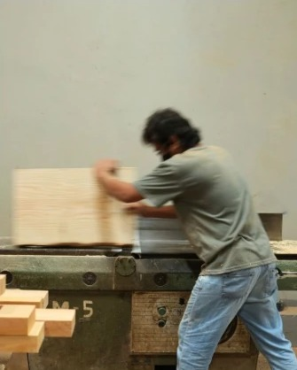
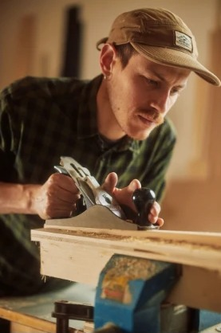

서비스 분석
'시공사'보다 '반장님'을 검색하는 시대
플랫폼 경쟁의 핵심이 DB 규모에서 평판 인프라로 이동하고 있다
3줄 요약
- 인테리어 완성도는 결국 사람 손끝에서 결정돼서, 소비자는 '업체명'보다 '이 반장님 후기'를 검색하기 시작했어요.
- 평판이 데이터로 쌓이면 작업자가 익명성 뒤에 숨기 어려워지고, 실력 있는 숙련공은 인정받을 통로가 생겨요.
- 플랫폼의 핵심 자산은 업체 수가 아니라 믿을 수 있는 평판 인프라예요. 단, 리뷰 조작과 광고 노출 문제를 풀어야 해요.
인테리어를 맡길 때 가장 불안한 순간 중 하나는 이런 게 아닐까요?
"브랜드 업체라는데… 우리 집 마감하는 분은 어떤 사람이지?"
"후기 사진은 예쁜데, 실제 현장 퀄리티도 괜찮을까?"
인테리어는 아무리 좋은 자재를 써도 결국 마지막 완성도는 사람 손끝에서 결정됩니다. 타일, 도배, 목공 같은 분야는 작은 디테일 하나로 만족도가 크게 달라지기도 하죠.


그래서인지 요즘 인테리어 플랫폼들이 조금씩 달라지고 있습니다. 단순히 업체 목록을 나열하는 것을 넘어, 실제 작업자의 현장 후기와 평판 데이터를 전면에 내세우기 시작했어요. 오늘의집이 시공 전문가 프로필에 작업자별 리뷰를 누적하고, 집닥·하우스텝 같은 플랫폼들이 시공 이력과 하자 이슈 기록을 관리하기 시작한 게 그 흐름의 일부입니다.
소비자들도 자연스럽게 '업체명'보다 '이 반장님 후기'를 검색하게 되었고요. 반장님은 현장에서 실제 작업을 이끄는 기술자를 부르는 말이에요.
도덕적 해이와 평판 시스템
경제학에서 도덕적 해이란, 상대가 내 일을 제대로 확인하기 어려울 때 "이번 한 번쯤은 대충 해도 되지"라는 행동이 나타나기 쉬운 구조를 말합니다. 작업자가 익명성 뒤에 숨을 수 있을 때 발생하는 현상이죠. 하지만, 평판과 리뷰가 데이터로 축적되면 구조가 바뀝니다. 좋은 평가가 다음 현장 연결에 직접적인 영향을 주기 때문에, 작업자 입장에서도 자연스럽게 책임감 있게 일할 유인이 생기는 겁니다.
숙련공에게는 기회
반대로, 실력 있는 숙련공들에게는 자신의 기술력을 객관적으로 인정받을 수 있는 통로가 생기는 셈이기도 합니다. 오랫동안 입소문을 타며 현장을 다니셨던 아버지도 이 흐름에 공감하셨어요.
정직하게 일한 게 기록으로 남는 거니까,
— 인테리어 시공 전문가(아빠)
진짜 기술 있는 사람들한테는 오히려 좋은 시대지.
한계도 있습니다
물론 리뷰 조작이나 플랫폼 내 광고 우선 노출 문제가 해결되지 않으면, 이 평판 시스템도 또 다른 정보 왜곡을 만들 수 있습니다. '데이터가 쌓인다'는 것과 '믿을 수 있는 데이터가 쌓인다'는 건 다른 얘기니까요. 플랫폼이 어떤 방식으로 신뢰성을 담보할지가, 결국 경쟁력의 핵심이 될 겁니다.
결론
이 흐름이 시사하는 건 명확합니다. 인테리어 플랫폼의 경쟁력이 '얼마나 많은 업체를 확보했느냐'에서 '작업자 신뢰 데이터를 얼마나 정교하게 쌓느냐'로 이동하고 있다는 것입니다. 소비자가 업체가 아니라 반장님을 검색하는 순간, 플랫폼의 핵심 자산은 DB 규모가 아니라 평판 인프라가 됩니다. 결국 이 시장에서 살아남을 플랫폼은, 더 많은 업체를 등록한 곳이 아니라 더 믿을 수 있는 사람을 찾게 해주는 곳이 될 것입니다.